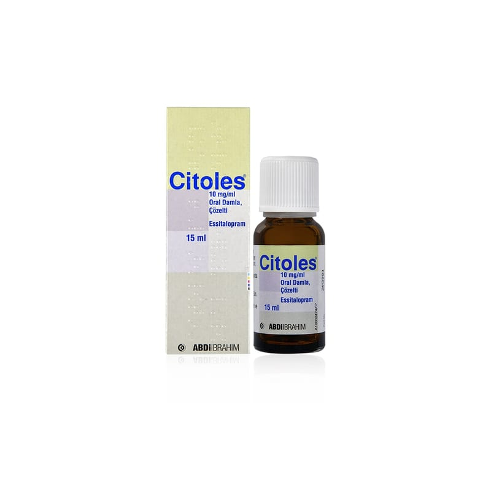

Citoles 10 mg/ml Oral Damla, Çözelti, 15 ml

Ne için kullanılır
KT · Bölüm 12. CİTOLES’i kullanmadan önce dikkat edilmesi gerekenler 3. CİTOLES nasıl kullanılır? 4. Olası yan etkiler nelerdir? 5. CİTOLES’in saklanması
Başlıkları yer almaktadır.
1.CİTOLES nedir ve ne için kullanılır ? • CİTOLES 10 mg/ml oral damla, her 1 ml'sinde 10 mg essitalopram içerir. (1 damla 0.5 mg essitalopram içerir.) • CİTOLES 15 ml solüsyon içeren kahverengi, damlalıklı cam şişede piyasaya sunulmaktadır. • CİTOLES essitalopram içerir. Bu ilaç, depresyon (majör depresif durumlar) ve agorafobili (açık alan korkusu) veya agorafobisiz panik bozukluğu, sosyal anksiyete (kaygı) bozukluğu ve yaygın anksiyete bozukluğu ve obsesif-kompulsif (saplantı-zorlantı)) bozukluk gibi anksiyete bozukluklarında kullanılır. • Essitalopram, selektif serotonin geri alım inhibitörleri (SSRIs) olarak adlandırılan bir antidepresan grubuna dahildir. Bu ilaçlar beyindeki serotonin sistemini etkileyerek serotonin düzeylerini arttırırlar. Serotonin sistemindeki bozukluğun, depresyon ve benzeri hastalıkların gelişiminde önemli bir faktör olduğu kabul edilmektedir.
İyi hissetmeye başlamanız birkaç haftayı bulabilir. Durumunuzda iyileşme görmeniz biraz zaman alsa bile, CİTOLES kullanmaya devam ediniz.
Eğer kendinizi daha iyi hissetmezseniz ya da daha kötü hissederseniz, bunu bir doktorla konuşmalısınız.